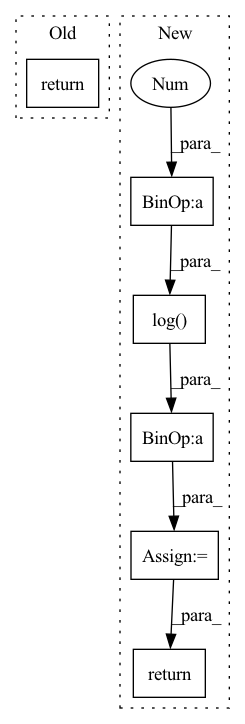

Pattern ID :1320

Before Change
super(ActionDecoder, self).__init__()
def forward(self, x):
return x
class RewardDecoder(nn.Module):
After Change
self.model = nn.Sequential(*self.layers)
def forward(self, x):
raw_init_std = np.log(np.exp(self.init_std) - 1)
x = self.model(x)
mean, std = torch.chunk(x, 2, dim=-1)
mean = self.mean_scale * torch.tanh(mean / self.mean_scale)
std = self.softplus(std + raw_init_std) + self.min_std
dist = td.Normal(mean, std)
transforms = [TanhBijector()]
dist = td.transformed_distribution.TransformedDistribution(
dist, transforms)
dist = td.Independent(dist, 1)
return dist
class DenseDecoder(nn.Module):
In pattern: SUPERPATTERN
Frequency: 4
Non-data size: 6
Instances
Fragment ID: 3867291
Project Name: chamorajg/pl-dreamer
Commit Name: 76fdde73106a7f1aade5a0b5254668f2acd6c439
Time: 2021-08-04
Author: chanduiyer.raja@gmail.com
File Name: planet.py
M Class Name: ActionDecoder
N Class Name: ActionDecoder
M Method Name: forward(2)
N Method Name: forward(2)
M Parent Class: nn.Module
N Parent Class: nn.Module
M File Name: planet.py
N File Name: planet.py
M Start Line: 101
M End Line: 101
N Start Line: 158
N End Line: 168
'>
Before Change
attn = attn * mapping_mask
output = torch.bmm(attn, v)
return output, attn
After Change
if key_mask is not None:
attn = attn.masked_fill(key_mask == 0., -np.inf)
if attn_prior is not None:
attn = self.log_softmax(attn) + torch.log(attn_prior.transpose(1, 2) + 1e-8)
attn_logprob = attn.unsqueeze(1).clone()
attn = self.softmax(attn)
if query_mask is not None:
attn = attn * query_mask
attn_raw = attn.clone()
if mapping_mask is not None:
attn = attn * mapping_mask
output = torch.bmm(attn, v)
return output, (attn, attn_raw), attn_logprob
'>
Fragment ID: 3867288
Project Name: keonlee9420/portaspeech
Commit Name: 814cdda1ebf7dc626708db2bcf20fdb9207f4345
Time: 2022-02-13
Author: keonlee9420@gmail.com
File Name: model/blocks.py
M Class Name: ScaledDotProductAttention
N Class Name: ScaledDotProductAttention
M Method Name: forward(8)
N Method Name: forward(7)
M Parent Class: nn.Module
N Parent Class: nn.Module
M File Name: model/blocks.py
N File Name: model/blocks.py
M Start Line: 615
M End Line: 623
N Start Line: 612
N End Line: 632
'>
Before Change
loss_ball = - torch.sum(x_target * torch.log(x_pred + self.epsilon), dim=-1) / self.w - torch.sum(
y_target * torch.log(y_pred + self.epsilon), dim=-1) / self.h
return loss_ball
class Events_Spotting_Loss(nn.Module):
After Change
x_target = target_ball_position[:, :self.w]
y_target = target_ball_position[:, self.w: (self.w + self.h)]
loss_ball_x = - torch.mean(
x_target * torch.log(x_pred + self.epsilon) + (1 - x_target) * torch.log(1 - x_pred + self.epsilon), dim=-1)
loss_ball_y = - torch.mean(
y_target * torch.log(y_pred + self.epsilon) + (1 - y_target) * torch.log(1 - y_pred + self.epsilon), dim=-1)
return loss_ball_x + loss_ball_y
class Events_Spotting_Loss(nn.Module):
'>
Fragment ID: 3867299
Project Name: maudzung/ttnet-real-time-analysis-system-for-table-tennis-pytorch
Commit Name: c805eab1f8d8591c31a394d6d9e2bcc73745152e
Time: 2020-06-04
Author: nguyenmaudung93.kstn@gmail.com
File Name: src/losses/losses.py
M Class Name: Ball_Detection_Loss
N Class Name: Ball_Detection_Loss
M Method Name: forward(3)
N Method Name: forward(3)
M Parent Class: nn.Module
N Parent Class: nn.Module
M File Name: src/losses/losses.py
N File Name: src/losses/losses.py
M Start Line: 16
M End Line: 22
N Start Line: 13
N End Line: 23
'>
Before Change
encoding_indices = soft_one_hot.argmax(dim=1)
return z_q, loss, (None, None, encoding_indices)
After Change
encoding_indices = soft_one_hot.argmax(dim=1)
encodings = F.one_hot(encoding_indices, self.num_tokens).type(z.dtype)
avg_probs = torch.mean(encodings, dim=0)
perplexity = torch.exp(-torch.sum(avg_probs * torch.log(avg_probs + 1e-10)))
return z_q, loss, (perplexity, encodings, encoding_indices)
'>
Fragment ID: 3867296
Project Name: tgisaturday/dalle-lightning
Commit Name: 39e8b24fa405a4320d7c683e7054ae18ef4563f4
Time: 2021-07-28
Author: jamesk1228@gmail.com
File Name: pl_dalle/modules/vqvae/quantize.py
M Class Name: GumbelQuantizer
N Class Name: GumbelQuantizer
M Method Name: forward(2)
N Method Name: forward(2)
M Parent Class: nn.Module
N Parent Class: nn.Module
M File Name: pl_dalle/modules/vqvae/quantize.py
N File Name: pl_dalle/modules/vqvae/quantize.py
M Start Line: 127
M End Line: 135
N Start Line: 127
N End Line: 138